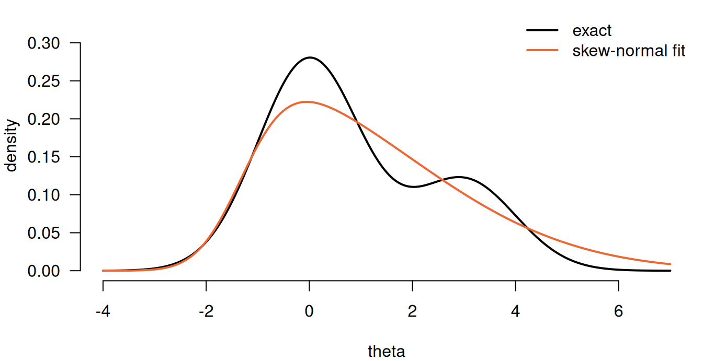

library(inlavanilla)
y <- c(2, 0, 3, 1, 4, 2, 1)
logpost_pois <- function(theta, y) {
rate <- exp(theta[["log_rate"]])
sum(dpois(y, rate, log = TRUE)) +
dgamma(rate, 2, 1, log = TRUE) +
theta[["log_rate"]] # the Jacobian
}
fit_pois <- inla_vanilla(logpost_pois, c(log_rate = 0), y = y, silent = TRUE)
summary(fit_pois)
#> ── INLAvanilla summary ───────────────────────────────────── Skew-normal + VB ──
#>
#> Posterior marginals
#> Mean SD 2.5% 25% 50% 75% 97.5% Mode
#> log_rate 0.595 0.263 0.047 0.426 0.607 0.776 1.078 0.631
#>
#> Diagnostics
#> VB shift SN - VB Shape NMAD Bend
#> log_rate -0.13 -0.00077 -1.4 0.0066 0
#>
#> ✔ Mode found in 7 iterations (gradient 9.8e-08 SDs).
#> ✔ VB correction in 3 iterations: max shift 0.13 SDs.
#> ✔ Skew-normal fits: max NMAD 0.0066.
#> ✔ Skew-normal and VB means agree to within 7.7e-04 SDs.
#>
#> Log marginal likelihood: -12.354 (Laplace -12.362, VB term 0.0083)
#> 78 logpost calls in 9ms (mode 3ms, VB 1ms, marginals 3ms)What can go wrong
inla_vanilla() approximates a posterior in stages, and each stage can fail in its own way. The mode search can stop short. The Gaussian can be a poor centre, so the VB correction moves far. A skew-normal can fail to match the shape of a marginal. And each marginal is fitted to a scan of only \(\pm 4\) Laplace SDs around the mode, so whatever lies beyond is extrapolated.
Each stage is checked as it runs, at almost no cost: the checks reuse what the fit has already computed. summary() reports every check and flags the values that look off. The clearest problems also raise one warning at the end of the fit. Printing the fit ends with a line counting its warnings and one counting the flagged checks, each shown only when there are any, so even a fit run with silent = TRUE shows that something needs a look.
| Check | In fit$diagnostics
|
Flagged by summary()
|
Fit-time warning |
|---|---|---|---|
| Mode | optim$grad_mode |
above 0.01 SDs | its own warning |
| VB correction |
marginals$vb_shift, vb$fallback
|
above 1 SD, or fallback | the same |
| Skew-normal and VB means | marginals$sn_vs_vb |
above 0.1 SDs | no |
| Skew-normal fit | marginals$nmad |
above 0.05 | above 0.1 |
| Scan path | marginals$bend |
above 0.1 nats | no |
| Tails | marginals$tails |
heavy | heavy |
| Scan-end mass | marginals$scan_end_mass |
above 0.05 | above 0.05 |
The levels of the fit-time warning match INLAvaan’s. They are set so that a healthy fit stays silent, and the flags in summary() are more sensitive: a flag is a prompt to look again, not a verdict.
A healthy fit
Poisson counts with a Gamma(2, 1) prior on the rate, on the log scale:
Every check passes. The marginal is mildly skewed (shape about -1.4), the skew-normal matches the scan to within 1% of its peak (NMAD), and its mean agrees with the VB-corrected mean.
The mode and the VB correction
The mode is accepted when the gradient there, in posterior SDs, is below 0.01: a Newton step would move it by less than a hundredth of an SD. The optimiser’s own return code is not used, because without a gradient it can report failure at an accurate mode, and success short of one. When the mode is off, the fit warns, and suggests what to change.
The VB correction recentres the Gaussian at a better estimate of the posterior mean. vb_shift is how far it moved each mean from the mode, in posterior SDs. A shift of a few tenths is normal for a skewed posterior; a shift above 1 SD, or a fixed-point iteration that fails and falls back to the optimiser, means that the posterior is far from the Laplace Gaussian.
The skew-normal mean and the VB mean both estimate the posterior mean, by different routes, so they should agree closely. sn_vs_vb is their gap in posterior SDs, and a gap above 0.1 is flagged.
The skew-normal fit
nmad is the largest gap between the fitted skew-normal and the scanned log-posterior, on the density scale and relative to the peak. A skew-normal has one mode and one direction of skew, so it cannot follow a marginal with two bumps:
logpost_mix <- function(theta) {
log(0.7 * dnorm(theta[[1]], 0, 1) + 0.3 * dnorm(theta[[1]], 3, 1))
}
fit_mix <- inla_vanilla(logpost_mix, c(theta = -0.2))
#> ✔ Found the posterior mode in 4 iterations [3ms]
#> ✔ VB mean correction, max shift 0.4σ [7ms]
#> ✔ Fitted 1 skew-normal marginal [2ms]
#> Warning: The approximation may be poor for some parameters.
#> ✖ Heavy tails for theta: the density is still over 5% of its peak at the ends
#> of the scan, 4 Laplace SDs out, and the skew-normal extrapolates beyond them.
#> ✖ Poor skew-normal fit for theta: largest NMAD 0.2, above 0.1.
#> ✖ The skew-normal for theta puts up to 0.091 of its mass beyond the scanned
#> window (above 0.05), so its outer quantiles are extrapolated.
#> ℹ See `summary()` of the fit for every diagnostic, and `vignette("diagnostics",
#> package = "inlavanilla")` for what they mean.The fit ends with one warning that lists every problem. The second bump puts mass far beyond what the Laplace SD expects, so the tails are heavy, the skew-normal fits the scan poorly, and it stretches its own tail out of the scanned window to cover the bump.
# The skew-normal density, from the fit's xi, omega and alpha
dskewnorm <- function(x, xi, omega, alpha) {
z <- (x - xi) / omega
2 / omega * dnorm(z) * pnorm(alpha * z)
}
theta <- seq(-4, 7, length.out = 400)
exact <- 0.7 * dnorm(theta, 0, 1) + 0.3 * dnorm(theta, 3, 1)
sn <- fit_mix$sn[1, ]
fitted <- dskewnorm(theta, sn[["xi"]], sn[["omega"]], sn[["alpha"]])
par(mar = c(4, 4, 0.5, 0.5))
plot(
theta, exact, type = "l", lwd = 2, las = 1, bty = "n",
xlab = "theta", ylab = "density", ylim = c(0, 0.33)
)
lines(theta, fitted, col = "#eb6834", lwd = 2)
legend(
"topright", c("exact", "skew-normal fit"),
col = c("black", "#eb6834"), lwd = 2, bty = "n"
)
The scan path
Each marginal is scanned along a straight line through the mode, the path on which the Laplace Gaussian puts the other parameters at their conditional mode given this one. When the true conditional mode bends away from the line, the scan misses log-density, and the marginal comes out too narrow. bend is the log-density, in nats, that one Newton step in the other parameters would recover at \(\pm 2\) SDs.
This happens when a parameter’s spread depends on another parameter that the data pin down poorly. A normal mean with an unknown SD, from 12 observations, is the textbook case:
set.seed(4)
y12 <- rnorm(12, 10, 2)
logpost_norm <- function(theta, y) {
sum(dnorm(y, theta[["mu"]], exp(theta[["log_sigma"]]), log = TRUE)) +
dnorm(theta[["mu"]], 0, 100, log = TRUE) +
dnorm(theta[["log_sigma"]], 0, 10, log = TRUE)
}
fit_norm <- inla_vanilla(
logpost_norm, c(mu = 9, log_sigma = 0.5), y = y12, silent = TRUE
)
signif(fit_norm$diagnostics$marginals[, c("nmad", "bend")], 2)
#> nmad bend
#> mu 1.9e-06 3.3e-01
#> log_sigma 1.1e-02 4.9e-07summary() flags the bend for mu. The exact marginal SD of mu, from a grid, shows how much narrower the skew-normal is:
grid <- expand.grid(
mu = seq(7, 15, length.out = 401),
log_sigma = seq(-1, 2.5, length.out = 401)
)
lp <- apply(grid, 1, function(g) logpost_norm(g, y12))
w <- exp(lp - max(lp))
w <- w / sum(w)
m <- sum(w * grid$mu)
sds <- c(exact = sqrt(sum(w * (grid$mu - m)^2)), skew_normal = fit_norm$summary["mu", "SD"])
sds
#> exact skew_normal
#> 0.6125832 0.5308595The skew-normal SD of mu is 13% too small here. The gap shrinks as \(1/n\): for a normal mean with an unknown SD it is about 3% at 50 observations and under 1% at 200. The bend value says which parameters are at risk, not exactly how much.
Tails and scan-end mass
Both checks are about the edge of the scanned window, but they look at different things:
-
tailsreads the log-posterior itself at the two ends of the scan. It is flagged when either end is still within 3 nats of the peak, that is, when the density there is over 5% of its peak. A Gaussian is 8 nats down at \(\pm 4\) SDs. -
scan_end_massis the mass the fitted skew-normal puts beyond the window, where it is extrapolated (as INLAvaan’sdiagnostics()reports it). A Gaussian marginal gives \(2\Phi(-4) = 6.3 \times 10^{-5}\); the larger it is, the more of the marginal is extrapolated.
Neither one can see the mass the true posterior has beyond the window. The figure shows three one-parameter posteriors whose exact densities are known. The x axis is in Laplace SDs from the mode, so the scanned window is always \(-4\) to \(4\) (the grey band).
![Three columns, one posterior each. Top row: the log density with the scan points, the ends of the scan and a line 3 nats below the peak. Bottom row: the density, with the mass outside the scanned window shaded for the exact posterior and for the skew-normal fit. In the first column both are tiny. In the second the scan ends sit above the 3-nat line, so tails is flagged, and the exact posterior has much more mass outside the window than the fit. In the third the scan ends are just below the line, and the exact posterior again has more mass outside than the fit.](diagnostics_files/figure-html/tails-figure-1.png)
In the top row, tails reads the open circles against the dashed line 3 nats below the peak. In the bottom row, the orange shading is scan_end_mass and the grey shading is the exact posterior’s mass beyond the window.
- Well behaved. The scan ends are about 8 nats down, as for a Gaussian, and neither the fit nor the posterior has much mass outside. Both checks are rightly quiet.
-
Heavy inside the window. A Cauchy posterior is still high at the ends of the scan, so
tailsfires, and the fit warns.scan_end_massstays under 0.05: the skew-normal has Gaussian tails, so whatever it fits, it puts little mass outside the window. It exceeds 0.05 only when the fit itself is very wide or very skewed, as for the mixture above. - Heavy beyond the window. Here the data can only bound a variance from above, so its log has a long left tail that only the prior holds back. The tail flattens out beyond the window: the scan end is already more than 3 nats down, and the skew-normal puts little mass outside. Both checks are quiet, but the exact posterior has 0.025 of its mass outside, against 0.006 for the fit.
The third case is the known limit of a skew-normal at a boundary: no check that reads only the scanned window can see a tail that starts beyond it. In the structural equation model of the Rcpp article, two log residual variances behave like this, more strongly. Their skew-normal marginals are too narrow on the log scale, although on the variance scale the error is much smaller. INLAvaan gives the same marginals there.
The warning
The fit-time warning is a condition of class inlavanilla_diagnostics_warning, which is also an inlavanilla_warning. With silent = TRUE nothing is printed, and every warning raised during the fit is kept in fit$warnings as plain text, which suits simulations:
fit_mix_quiet <- inla_vanilla(logpost_mix, c(theta = -0.2), silent = TRUE)
length(fit_mix_quiet$warnings)
#> [1] 1
cat(fit_mix_quiet$warnings)
#> The approximation may be poor for some parameters.
#> ✖ Heavy tails for theta: the density is still over 5% of its peak at the ends of the scan, 4 Laplace SDs out, and the skew-normal extrapolates beyond them.
#> ✖ Poor skew-normal fit for theta: largest NMAD 0.2, above 0.1.
#> ✖ The skew-normal for theta puts up to 0.091 of its mass beyond the scanned window (above 0.05), so its outer quantiles are extrapolated.
#> ℹ See `summary()` of the fit for every diagnostic, and `vignette("diagnostics", package = "inlavanilla")` for what they mean.To handle the warning in code, catch its class:
fit <- withCallingHandlers(
inla_vanilla(logpost_mix, c(theta = -0.2)),
inlavanilla_diagnostics_warning = function(w) {
message("Check this fit.")
invokeRestart("muffleWarning")
}
)
#> ✔ Found the posterior mode in 4 iterations [0ms]
#> ✔ VB mean correction, max shift 0.4σ [0ms]
#> ✔ Fitted 1 skew-normal marginal [2ms]
#> Check this fit.Checks on a supplied gradient
When you pass grad, it is compared with finite differences of logpost at init, per posterior SD, and its Jacobian at the mode is checked for symmetry, as the Hessian of a function must be. Either failure gives a warning, because a wrong gradient gives a wrong mode and wrong marginals.